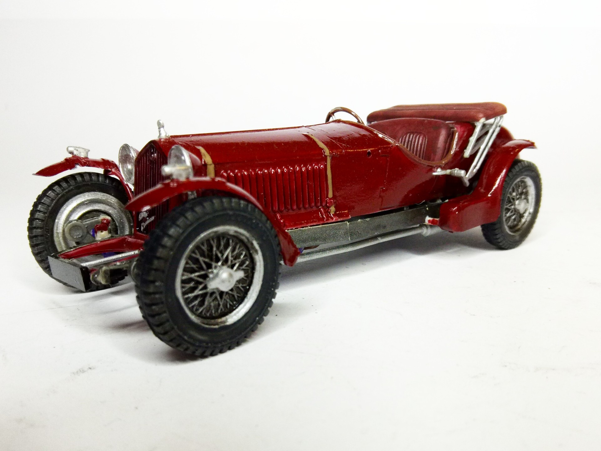
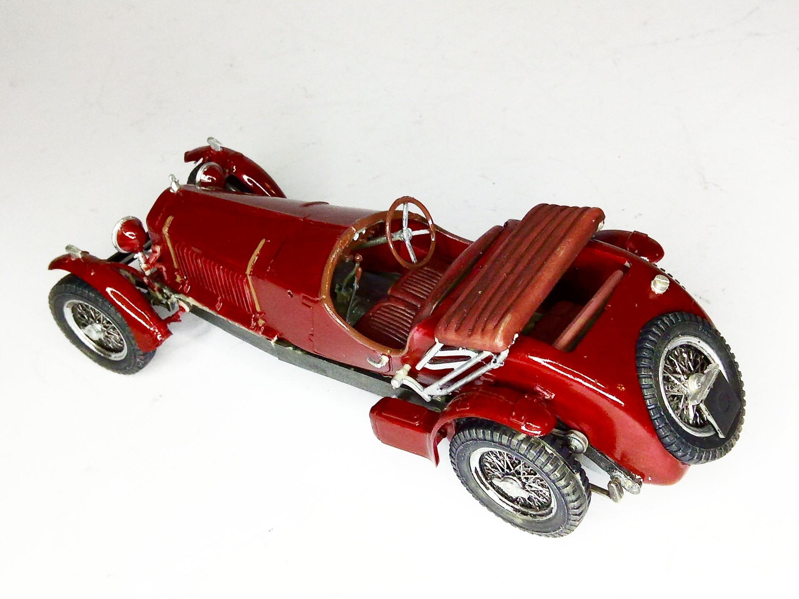

Auto e veicoli stradali · scale model archive
Alfa Romeo 1933
Alfa Romeo 1933 — Kit: Airfix, Scale: 1/32. Cute little kit #1/32 #Airfix #AlfaRomeo

Photo gallery

English description
Cute little kit
#1/32 #Airfix #AlfaRomeo
Descrizione italiana
Piccolo kit grazioso.